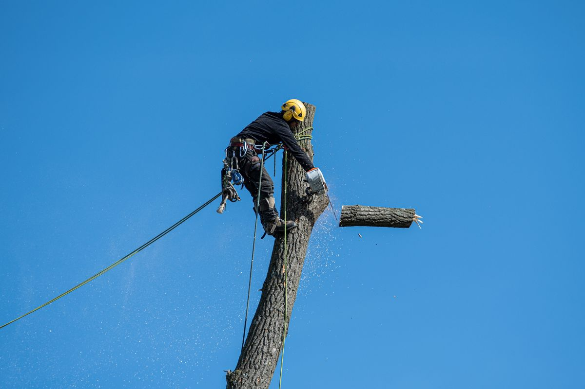
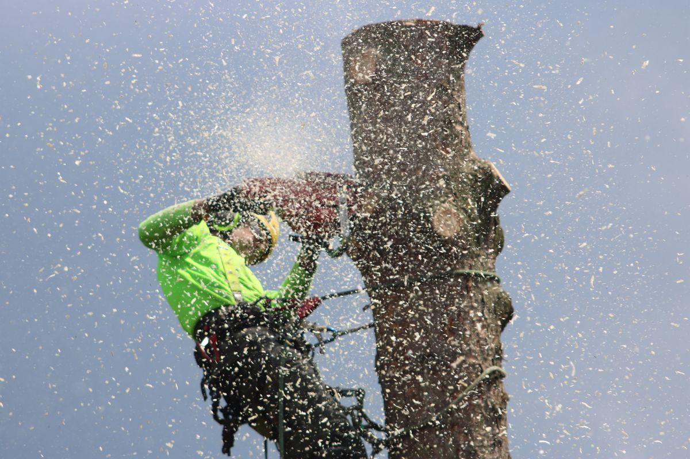
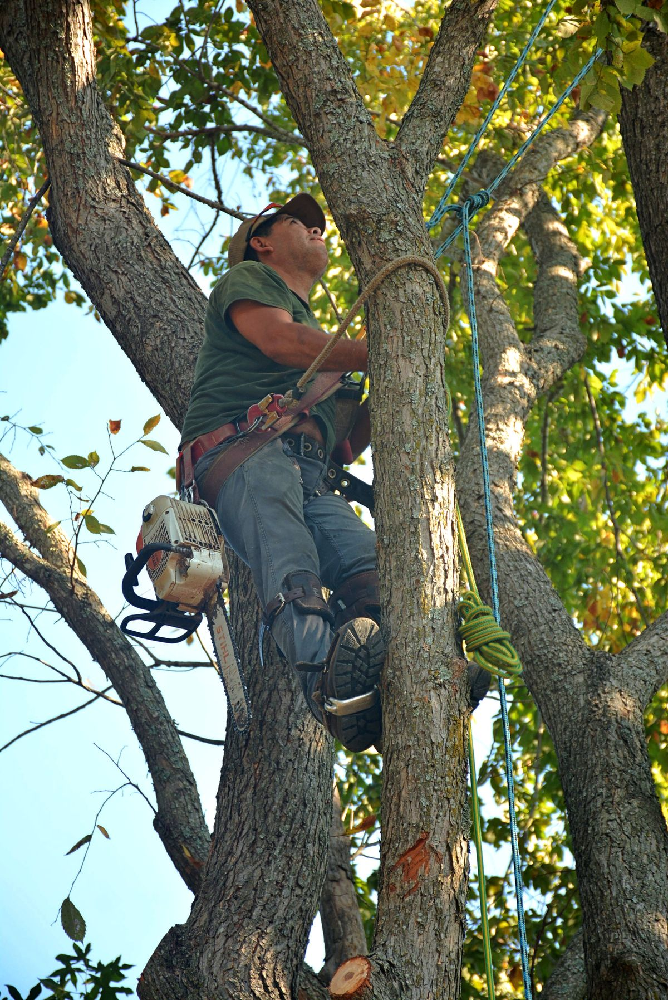

Tree services at Tyler's Tree Service
Family-owned tree service in West Fargo, with free estimates and emergency service.
✓
Tree removal
✓
Tree pruning
✓
Stump grinding
✓
Land clearing and site prep
✓
Firewood sales
✓
Custom milled wood
Gallery



All gallery photos are stock photos, labeled as such. They show tree work, not this business's crews or jobs.
Contact
Tyler's Tree Service serves West Fargo, ND. Questions? Call (701) 730-1236.